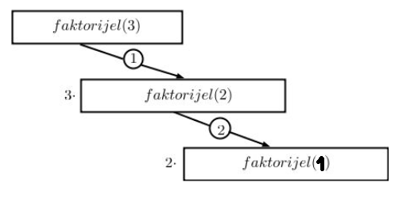
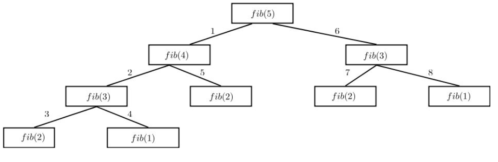
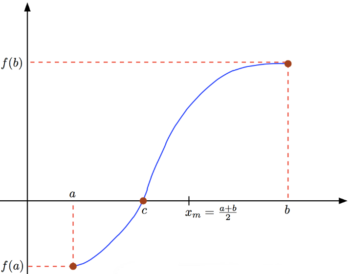
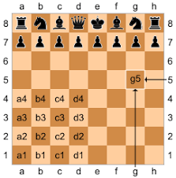

Funkcije
U jednoj velikoj trgovinskoj kompaniji, direktor analitike Marko svakog jutra dobija iste zahtеve: „Kolika nam je bruto marža za ovaj proizvod?“ „Izračunaj nam tačku preloma za novi model.“ „Možemo li dobiti projekciju profita ako se cena poveća za 3%?“
Marko strpljivo otvara Eksel ili Pajton, unosi formule, kopira ih, prilagođava za svaki novi proizvod, svaku novu nedelju, svako novo tržište. Jedan dan shvati sledeće: Već tri meseca piše iste formule iznova — samo sa drugim brojevima. Umoran od rutine, stane i pomisli: „Ako bi ovo bila fabrika, ja bih već odavno automatizovao liniju… Zašto onda u kodu stalno ponavljam iste operacije?“
I tu mu sine ono što pravi razliku između početnika i pravog analitičara: u programiranju, kao i u ekonomiji, ponavljanje je trošak. Svaki put kada ponoviš isti blok koda, ti: trošiš vreme, povećavaš verovatnoću greške, i praviš sistem koji se teško održava.
A onda je Marko otkrio funkcije — ekonomsku logiku pretočenu u kod. Funkcija postaje standardizovana formula, kao račun poslovnog prihoda ili obračun amortizacije: definišeš je jednom, pozivaš je beskonačno puta, koristiš je u svim delovima analize, i ako nešto menjaš — menjaš na jednom mestu.
Marko napravi funkcije marza(cena, nabavna_cena), break_even(fiksni, varijabilni, cena) i projekcija_profita(potrošnja, rast). I odjednom, njegova „ručna proizvodnja“ finansijskih proračuna postaje automatizovana linija. Umesto mnoštva tabela i ad hoc formula, sada ima uredan, robustan i skalabilan sistem. Isto kao što se kompanija razvija prelaskom sa zanatske na industrijsku proizvodnju, tako i Markov kod napreduje prelaskom sa haotičnog ponavljanja na dobro organizovane funkcije.
U tom trenutku, on postaje ne samo programer — već ekonomista koji zna da vreme, resursi i urednost imaju svoju cenu.
Funkcija
U programiranju funkcija je imenovani niz instrukcija koje obavljaju neki zadatak. Funkcija referiše na blok koda koji se može pokrenuti kada se pozove.
Možemo slobodno reći da je funkcija objekat prve kategorije u Pajtonu. Funkcija može da ima ulazne argumente, koje korisnik (entitet koji poziva funkciju) može učiniti dostupnim. Funkcije imaju i izlazni parametar ili izlazne parametre. To su rezultati funkcije, kada ona kompletira svoj zadatak.
Definicija funkcije može se pojaviti bilo gde u programu, ali se ona ne može pozvati pre nego što je definisana. Funkcije mogu biti i ugneždene, ali funkcije definisane unutar druge funkcije nisu (direktno) dostupne izvan te funkcije.
Funkcija math.sin ima jedan ulazni argument - ugao u radijanima, i jedan izlazni argument - aproksimaciju funkcije izračunatu za dati ulazni ugao. Niz instrukcija kojim izračunavamo ovu aproksimaciju čini telo funkcije, koje ćemo definisati u sledećoj sekciji.
Ugrađene (built-in) funkcije
Jedan deo funkcija već je ugrađen u Pajton, i neke smo opisali, kao na primer type, len. Kao dodatak, uveli smo i neke funkcije dostupne iz različitih paketa, na primer, math.sin, random.sample itd.
import math
import random
a=math.sin(math.pi/2)
b= random.sample(['crvena', 'plava', 'bela','zelena', 'žuta'], k=3)
print(a)
print(b)
1.0
['žuta', 'bela', 'zelena']
Za proveru da li je neka funkcija ugrađena u Pajton koristimo funkciju type. Na primer, odgovor na pitanje da li je funkcija len ugrađena u Pajton?
type(len)
builtin_function_or_method
Proverite da li je random.sample ugrađena funkcija primenom funkcije type.
Istraži
Šta sve modul random poseduje i kako se koristi random.sample
Podsetimo se, metod je funkcija povezana sa nekom klasom. Funkcija definisana unutar neke klase definiše njeno ponašanje. Na instanci te klase, obično se poziva tako što se posle instance te klase stavi tačka, a zatim sledi poziv te funkcije. Na primer, sa 'Beograde'.pop() pozivamo funkciju bez argumenata pop koja pripada klasi string koja će datom stringu obrisati poslednji karakter i vratiti taj karakter.
Definisanje sopstvenih funkcija
Jedna od najvažnijih stvari u programiranju je kreiranje sopstvenih funkcija. Funkcije se mogu specifikovati na više načina. Najpogodniji način da definišemo funkciju je tako što joj damo ime primenom ključne reči def, kako je to pokazano u narednom kodu:
def ime_funkcije(parametar1, parametar2, ...):
"""(opciono) dokumentacioni string – opis funkcije"""
naredba_1
naredba_2
...
return vrednost # opciono
```
Definisanje funkcija u Pajtonu zahteva sledeće dve komponente
Zaglavlje funkcije koje počinje ključnom rečju
def, za kojim sledi par zagrada sa ulaznim parametrima između njih, i završava se dvotačkom:
def function_name(parametar_1, parametar_2, ...):
Telo funkcije čini uvučeni blok (tačnoo 4 praznine) indicirajući na glavno telo funkcije. On sadrži tri dela:
Dokumentacioni (opisni) string, je string koji opisuje funkciju i koji se može dobiti funkcijom
help()ili pomoću magične komande?. Trostruki jednostruki ili dvostruki navodi pokazuju nam gde da postavimo dokumentacioni string. Između navodnika možete da napišete bilo koji string u jednoj ili više linija.Naredbe funkcije, su korak-po-korak instrukcije koje će funkcija izvršiti kad bude bila pozvana.
Naredba
returnmože sadržati neke parametre koje treba vratiti kad se funkcija izvrši. Kasnije ćemo videti, da se može vratiti bilo koji tip, čak i funkcija.
Ulazni parametar i argument.
Parametar je promenljiva koju definiše funkcija i koji dobija vrednost kada se funkcija pozove.
Argument je vrednost koja je prosleđena funkciji kada je pozvana.
Na primer, ako definišemo funkciju pozdrav(ime), tada je ime ulazni parametar. Kada pozovemo funkciju, i prosledimo joj vrednost Natalija, tada je ova vrednost ulazni argument. Zbog ove suptilne razlike, u preostalom delu nećemo se truditi da pravimo tu razliku.
Kada vaš kod postane sve duži i komplikovaniji, komentari mogu da pomognu vama i onima koji čitaju vaš kod kako bi ga bolje razumeli. Navika da često komentarišete vaš kod je prevencija od grešaka u kodiranju, razumevanje gde vaš kod ide kada ga pišete i asistira vam u pronalaženju grešaka. Iako je opciono, ipak je poželjno da se stavi opis funkcije, autor kao i datum kreiranja u opisnom stringu u zaglavlju funkcije.
Preporučujemo da komentarišete sopstveni kod. Istražite kako izgleda lepo i ispravno komentarisanje koda.
Prva funkcija
Definišimo funkciju pod imenom moje_sabiranje koje uzima tri broja i nalazi njihovu sumu.
def moje_sabiranje(a,b,c):
"""
Funkcija koja sabira tri broja
Ulaz: 3 broja a, b, c
Izlaz: zbir brojeva a, 2b i 4c
Autor:
Datum:
"""
# Ovo je sumiranje
izlaz = a + 2*b + 4*c
return izlaz
Ako ne uvučete vaš kod kada definišete funkciju, dobićete poruku o grešci:
def moje_sabiranje(a,b,c):
"""
Funkcija koja sabira tri broja
Ulaz: 3 broja a, b, c
Izlaz: zbir brojeva a, 2b i 4c
Autor:
Datum:
"""
# Ovo je sumiranje
izlaz = a + 2*b + 4*c
return izlaz
Cell In[3], line 2
"""
^
IndentationError: expected an indented block after function definition on line 1
Primena funkcije
Iskoristimo funkciju moje_sabiranje da izračunamo zbir nekoliko brojeva:
f = moje_sabiranje(1,1,1)
f
---------------------------------------------------------------------------
NameError Traceback (most recent call last)
Cell In[4], line 1
----> 1 f = moje_sabiranje(1,1,1)
2 f
NameError: name 'moje_sabiranje' is not defined
Parametri funkcije moje_sabiranje su a,b i c. Argumenti koje smo zadali prilikom poziva bili su 1, 2 i 3.
Budimo interpreter (Izvršavajmo naredbu po naredbu):
Pajton pronalazi funkciju
moje_sabiranjemoje_sabiranjeuzima za prvi ulazni argument vrednost 1 i dodeljuje ga promenljivoj sa imenoma(prvo ime promenljive u ulaznoj listi argumenata)moje_sabiranjeuzima za drugi ulazni argument vrednost 2 i dodeljuje ga promenljivoj sa imenomb(drugo ime promenljive u ulaznoj listi argumenata)moje_sabiranjeuzima za treći ulazni argument vrednost 3 i dodeljuje ga promenljivoj sa imenomc(treće ime promenljive u ulaznoj listi argumenata)moje_sabiranjeizračunava zbira,2bi4c, što je1 + 2*2 + 4*3 = 17.moje_sabiranjedodeljuje vrednost 17 promenljivojizlazmoje_sabiranjeje sada ekvivalentno vrednosti 17, i ova vrednost se dodeljuje promenljivojfPrikazuje se vrednost promenljive
f
Broj argumenata ovakve funkcije mora odgovarati broju parametara (argumenata) koji smo predvideli prilikom kreiranja te funkcije. Dakle, naša funkcija moje_sabiranje očekuje tri argumenta, i svako drugačije pozivanje dovešće do greške:
moje_sabiranje(1, 5)
---------------------------------------------------------------------------
TypeError Traceback (most recent call last)
Cell In[7], line 1
----> 1 moje_sabiranje(1, 5)
TypeError: moje_sabiranje() missing 1 required positional argument: 'c'
Kviz 1.
Šta će biti izlaz ako pozovemo sledeću funkciju:
moje_sabiranje("pesma", "slika", "muzika")
Odgovor:
'pesmaslikaslikamuzikamuzikamuzikamuzika'
Kviz 2.
Šta će biti izlaz ako pozovemo sledeću funkciju:
moje_sabiranje("pesma", "slika", 3)
Odgovor:
TypeError
Kviz 3.
Šta će biti izlaz ako pozovemo sledeću funkciju:
moje_sabiranje('1', 2, 3)
Odgovor:
TypeError
Kviz 4.
Šta će biti izlaz ako pozovemo sledeću funkciju:
moje_sabiranje(1, [1, 2], 3)
Odgovor:
TypeError
Pozivanje pomoći oko funkcije
Dokumentacioni string nam pomaže da dobijemo informacije o funkciji. Njemu pristupate pozivom funkcije help ili magičnom komandom ? na ime funkcije. Na primer:
help(moje_sabiranje)
Help on function moje_sabiranje in module __main__:
moje_sabiranje(a, b, c)
Funkcija koja sabira tri broja
Ulaz: 3 broja a, b, c
Izlaz: zbir brojeva a, 2b i 4c
Autor:
Datum:
moje_sabiranje?
Signature: moje_sabiranje(a, b, c)
Docstring:
Funkcija koja sabira tri broja
Ulaz: 3 broja a, b, c
Izlaz: zbir brojeva a, 2b i 4c
Autor:
Datum:
File: c:\users\dragan azdejkovic\appdata\local\temp\ipykernel_41312\1664104178.py
Type: function
Zadatak 1.
Primenite funkciju
moje_sabiranjeda izračunate zbir \(\sin(\pi)+ 2\cos(\pi) +4\tan(\pi)\)Upotrebite matematičke izraze kao ulaze za
moje_sabiranjei proverite da li funkcija izvodi operacije korektno.
Saveti pri pisanju funkcija.
Ručno kucane 4 praznine je prvi nivo uvlačenja koji ćete videti kada kucate funkcije. Viši nivoi uvlačenja su neophodni, ako imamo ugneždene funkcije ili
ifnaredbe. Nekad treba da uvučemo ili povučemo blok koda. To možemo da uradimo tako što prvo selektujemo sve linije u bloku koda, a zatim koristimo<Tab>ili<Shift> + <Tab>da uvećamo ili smanjimo nivo uvlačenja.Izgradite dobru praksu pri kodiranju dajući promenljivim i funkcijama opisna imena, komentarišite često i izbegavajte nepotrebne linije koda.
Imena promenljivih i funkcijama neka počinju malim slovima, sa rečima odvojenim donjom crtom
_kako bi povećali čitljivost.Dobra je praksa da često sačuvate dokument dok pišete funkcije.
Funkcija sa više izlaznih parametara
Funkcije u Pajtonu mogu da imaju više izlaznih parametara. Funkcija će formalno vratiti višestruki izlaz kao torku, koju zatim možemo da raspakujemo.
Primer 1.
Napišite kod za funkciju moja_trig_suma koja će računati dva zbira: sinusa i kosinusa kao i kosinusa i sinusa ulaznih parametara.
Testirajte fukciju za ulazne parametre \(\pi\) i \(0\).
Za ulazne parametre \(\pi\) i \(\frac\pi4\) dodelite prvi izlazni parametar promenljivoj
a, a drugi izlazni parametar promenljivojb.
import math as m
def moja_trig_suma(x, y):
"""
funkcija koja demonstrira višestruki izlaz
author
date
"""
izlaz_1 = m.sin(x) + m.cos(y)
izlaz_2 = m.sin(y) + m.cos(x)
return izlaz_1, izlaz_2
moja_trig_suma(m.pi,0)
(1.0000000000000002, -1.0)
a, b = moja_trig_suma(m.pi,m.pi/4)
print(a)
print(b)
0.7071067811865477
-0.2928932188134524
Specijalna vrednost None
Nije neophodno da funkcija eksplicitno vrati neki objekat. Funkcije koje ne dođu do kraja svog uvučenog bloka bez dostizanja return naredbe vratiće Pajtonovu specijalnu vrednost None. Interesantno je da njoj odgovara logička vrednost False.
Možemo definisati funkciju bez ulaznih parametara i naredbe return. Na primer:
def print_zdravo():
print("Zdravo :-)")
a=print_zdravo()
Zdravo :-)
Primetite da nema ulaznih argumenata, kada se poziva funkcija, ali su zagrade obavezne. Ovo je slučaj kad funkcija vraća `None’.
# Da li možemo da pretpostavimo šta će biti izlaz sledećeg koda?
b = print_zdravo()
type(b)
Zdravo :-)
NoneType
Ako nekada funkcija vrati None, to često može biti indikator greške. Više o ovome možete pročitati recimo OVDE
Argumenti funkcije
Python nudi izuzetno fleksibilan sistem za prosleđivanje argumenata. Zahvaljujući tome, ista funkcija može da se poziva na više načina, sa različitim tipovima i brojem ulaza. Ideja je da programer ima slobodu, a funkcija čitljivo i precizno ponašanje.
Postoje četiri osnovna načina zadavanja argumenata u Pythonu:
Pozicioni argumenti – redosled je važan
Imenovani (keyword) argumenti – redosled nije važan
Podrazumevane vrednosti parametara – omogućavaju da argument bude opcioni
Promenljivi broj argumenata (*args i **kwargs) – hvataju višak pozicionih i imenovanih argumenata
Ovaj sistem omogućava da funkcija bude jednostavna kad treba, ali i moćna kad je poziv složen. U praksi to znači da isti zadatak možemo rešiti sa više stilova poziva – što čini kod fleksibilnijim, čitljivijim i prilagođenijim složenim problemima programiranja i analize podataka.
Pozicioni argumenti
Pajton rukuje argumentima funkcije na način koji je neobično fleksiblan, u poređenju sa drugim jezicima. Najčešći tipovi argumenata su pozicioni argumenti, čije se vrednosti kopiraju po redu u njihove odgovarajuće parametre.
Sledeća funkcija pravi rečnik od svojih pozicionih parametara za unošenje i vraća ga:
def menu(vino, predjelo, dezert):
return {'vino': vino, 'predjelo': predjelo, 'dezert':dezert}
menu('Chardonnay', 'piletina', 'kolač')
{'vino': 'Chardonnay', 'predjelo': 'piletina', 'dezert': 'kolač'}
Premda su vrlo česti, mana pozicionih argumenata je što morate pamtiti značenje svake pozicije. Ako bismo zaboravili, i pozvali menu() sa vinom kao poslednjim elementom, umesto kao prvim, obrok bi bio drugačiji:
menu('biftek', 'torta', 'Merlot')
{'vino': 'biftek', 'predjelo': 'torta', 'dezert': 'Merlot'}
Funkcije sa keyword parametrima - imenovani argumenti
Kako biste izbegli konfuziju sa pozicionim argumentima, možemo odrediti argumente prema imenima njihovih odgovarajućih parametara, čak i u drugačijem redosledu od onoga u telu funkcije:
menu(predjelo ='biftek', dezert ='kolač', vino ='bordo')
{'vino': 'bordo', 'predjelo': 'biftek', 'dezert': 'kolač'}
Možete kombinovati pozicione argumente i imenovane argumente. Hajde da najpre odredimo vino, ali da za predjelo i dezert upotrebimo ključne reči
menu('Roze', dezert = 'pita', predjelo='riba')
{'vino': 'Roze', 'predjelo': 'riba', 'dezert': 'pita'}
Ukoliko pozovete funkciju i sa pozicionim i imenovanim argumentima, pozicioni argumenti treba da dođu na prvo mesto.
Podrazumevane vrednosti parametara
Možete odrediti podrazumevane vrednosti za neke parametre. Podrazumevane vrednosti se koriste onda kada pozivalac ne dostavlja odgovarajući argument. Ova mogućnost zapravo je veoma korisna i koristi se jako često.
def menu(vino, predjelo, dezert='puding'):
return {'vino': vino, 'predjelo': predjelo, 'dezert':dezert}
Ovoga puta pozivamo funkciju menu() bez argumenta dezert
menu('Vranac', 'piletina')
{'vino': 'Vranac', 'predjelo': 'piletina', 'dezert': 'puding'}
Ukoliko dostavite i argument on se koristi umesto podrazumevane vrednosti:
menu('Tamjanika', 'patka', 'krofna')
{'vino': 'Tamjanika', 'predjelo': 'patka', 'dezert': 'krofna'}
Napomena.
Podrazumevana vrednost parametra se izračunava samo jednom — u trenutku definisanja funkcije, a ne pri svakom pozivu.
To znači: ako je podrazumevana vrednost mutabilan objekat (lista, rečnik, skup), ona se deli između svih poziva funkcije, a to može da dovede do neželjenog ponašanja.
U sledećem testu, funkcija bocni_efekat bi trebalo da se pokrene sa novom praznom rez listom, doda joj argument arg, i zatim ispiše listu od jednog elementa. Međutim, postoji greška: ona je prazna samo dok se poziva prvi put. Pri drugom pozivu ona će sadržati već jedan element iz prethodnog poziva:
def bocni_efekat(arg, rez = []):
rez.append(arg)
print(rez)
# Šta će biti izlaz sledeće linije koda?
bocni_efekat(1)
# Šta će biti izlaz sledeće linije koda?
bocni_efekat(2)
Kako možemo da popravimo kod?
def efekat(arg):
rez=[]
rez.append(arg)
return rez
efekat('a')
['a']
efekat(2)
[2]
Ako ipak želimo ili moramo da imamo podrazumevanu vrednost, taj problem možemo da rešimo na sledeći način:
def bez_bocnog_efekta(arg, rez=None):
if rez is None:
rez=[]
rez.append(arg)
print(rez)
bez_bocnog_efekta(11)
[11]
bez_bocnog_efekta(111)
[111]
Grupisanje pozicionih argumenata uz *
Zamislite sledeći problem: želim da napišem funkciju ali ne znam koliko će parametara imati.
Kada se koristi unutar funkcije sa parametrom, zvezdica grupiše varijabilni broj pozicionih argumenata u n-torku vrednosti parametara. U sledećem primeru, args je n-torka parametara koju je rezultat argumenata koji su prosleđeni u funkciju print_args:
def print_args(*args):
print('Pozicioni argumenti u n-torci', args)
Ukoliko je pozovete bez argumenata, ništa nećete dobiti u *args:
print_args()
Pozicioni argumenti u n-torci ()
Šta god da joj date, biće ispisano kao args n-torka:
print_args(1,2,3,4,5,'...', 'Denver', 'Nuggets')
Pozicioni argumenti u n-torci (1, 2, 3, 4, 5, '...', 'Denver', 'Nuggets')
Ovo je korisno za pisanje funkcija poput naredne. Ukoliko su vašoj funkciji neophodni i pozicioni argumenti, *args ide na kraj i preuzima ostatak argumenata koje u uneti u funkciju:
def stampa(zahtev1, zahtev2, *args):
print('Neophodna mi je', zahtev1)
print('kao i',zahtev2,'.')
print('Sve preostalo nije neophodno', args)
stampa('kapa','rukavice','marama', 'peškir', 'štap')
Neophodna mi je kapa
kao i rukavice .
Sve preostalo nije neophodno ('marama', 'peškir', 'štap')
Kada koristite *, ne morate pozivati parametar n-torke args, ali se to u Pajtonu često radi.
Grupisanje ključnih reči uz **
Možete da upotrebite dve zvezdice (**) za grupisanje argumenata u rečnik, gde su imena argumenat ključevi, a njihove vrednosti odgovarajuće podrazumevane vrednosti. U sledećem primeru se definiše funkcija stampa_kwargs tako da ispisuje svoje ključne reči (argumente) i njihove vrednosti:
def stampa_kwargs(**kwargs):
print('Argumenti sa ključnim rečima',kwargs)
Hajde sada da pokušamo da pozovemo funkciju sa nekim ključnim rečima argumentima.
stampa_kwargs(vino='vranac', predjelo='musaka', dezert='mafini')
Unutar funkcije, kwargs je rečnik.
Ukoliko kombinujete pozicioni parametar *args i **kwargs, oni će se nalaziti u tom redosledu. Kao i sa args, ne morate pozivati ovaj parametar ključne reči kwargs, ali se to često radi.
Lokalne promenljive i globalne promenljive
Funkcije imaju svoj memorijski blok koji je rezervisan za promenljive kreirane unutar funkcije. Ovaj blok se ne deli sa memorijom celog notebook-a. Iz tog razloga, promenljive sa istim imenom mogu postojati unutar i izvan funkcije bez konflikta. Memorijski blok dodeljen funkciji se otvara svaki put kad se primeni funkcija. Izlaz sledećeg koda je saglasan sa tim principima:
def sabiranje(a,b,c):
izlaz = a+b+c
print("Vrednost promenljive izlaz unutar funkcije je", izlaz)
print("Adresa promenljive unutar funkcije je", id(izlaz))
return izlaz
izlaz = 1
sabiranje(1,2,3)
print("Vrednost promenljive izlaz izvan funkcije je", izlaz)
print("Adresa promenljive izvan funkcije je", id(izlaz))
Vrednost promenljive izlaz unutar funkcije je 6
Adresa promenljive unutar funkcije je 140734693286984
Vrednost promenljive izlaz izvan funkcije je 1
Adresa promenljive izvan funkcije je 140734693286824
Kviz 1.
Šta će biti vrednosti a,b,x,y i z posle izvršenja sledećeg koda?
def kviz_1(a,b):
x = a + b
y = x * b + 1
z = a + b
n = 2
print(f"Unutar funkcije: a={a}, b={b}, x={x}, y={y}, z={z}")
return x,y
a = 1
b = 3
z = 1
y, x = kviz_1(b,a)
print(f"Izvan funkcije: a= {a}, b={b}, x={x}, y={y}, z={z}")
Odgovor:
Unutar funkcije: a=3, b=1, x=4, y=5, z=4
Izvan funkcije: a= 1, b=3, x=5, y=4, z=1
Kviz 2.
Šta će biti vrednosti a,b,x,y i z posle izvršenja sledećeg koda?
def kviz_2(a,b):
x = a + b
y = x * b
z = a + b
n = 2
print(f"Unutar funkcije: a={a}, b={b}, x={x}, y={y}, z={z}")
return x,y
x = 5
y = 3
b,a = kviz_2(x,y)
print(f"Izvan funkcije: a= {a}, b={b}, x={x}, y={y}, z={z}")
Odgovor:
Unutar funkcije: a=5, b=3, x=8, y=24, z=8
Izvan funkcije: a= 24, b=8, x=5, y=3, z=1
Zašto je z = 1?
Kviz 3.
Šta će biti izlaz u narednom kodu?
def kviz_3(a,b):
x = a + b
y = x * b
z = a + b
n = 2
print(f"Unutar funkcije: a={a}, b={b}, x={x}, y={y}, z={z}")
return x,y
x = 5
y = 3
b, a = kviz_3(x,y)
print(n)
Odgovor:
---------------------------------------------------------------------------
NameError Traceback (most recent call last)
Cell In[4], line 14
12 y = 3
13 b, a = kviz_3(x,y)
---> 14 print(n)
NameError: name 'n' is not defined
Neka je promenljiva n definisana unutar funkcije. Pokušajmo sada da joj promenimo vrednost n unutar funkcije:
n = 42
def fun():
n = 3
print(f"Unutar funkcije: n je {n}")
fun()
print(f"Izvan funkcije: vrednost n je {n}")
Unutar funkcije: n je 3
Izvan funkcije: vrednost n je 42
Parametar global
Neka je promenljiva n definisana unutar funkcije. Pokušajmo sada da joj promenimo vrednost n unutar funkcije:
n = 42
def fun():
n = 3
print(f"Unutar funkcije: n je {n}")
fun()
print(f"Izvan funkcije: vrednost n je {n}")
Ovo je posledica činjenice da funkcije imaju svoj memorijski blok u okviru koga se sve izvršava.
Da omogućimo funkciji da menja promenljivu unutar koda moramo da primenimo ključnu reč (keyword) global da Python zna da je ova promenljiva globalna promenljiva i da se može koristiti kako izvan tako i unutar funkcije.
n = 42
def fun():
global n
print(f"Unutar funkcije: n je {n}")
n = 3
print(f"Unutar funkcije: n je promenjeno na {n}")
fun()
print(f"Izvan funkcije: vrednost n je {n}")
Unutar funkcije: n je 42
Unutar funkcije: n je promenjeno na 3
Izvan funkcije: vrednost n je 3
Ugneždene funkcije
Kada jednom kreiramo i sačuvamo novu funkciju, ona se ponaša kao i svaka druga ugrađena Python funkcija. Možemo da je pozovemo bilo gde u notebook-u.
Ugneždena funkcija je funkcija definisana unutar druge funkcije - funkcije roditelja. Samo funkcija roditelj može da pozove ugneždenu funkciju. Ugneždena funkcija preuzima odvojeni memorijski blok svoje roditelj funkcije.
Posmatrajmo sledeću funkciju:
from math import sqrt
def rastojanje_3(x,y,z):
"""
ulaz: x,y,z (2D koordinate sadržane u torki)
izlaz: d - lista, gde je
d[0] - rastojanje između x i y
d[1] - rastojanje između x i z
d[2] - rastojanje između y i x
"""
def e_rastojanje(x,y):
"""
podfunkcija funkcije rastojanje_3
izlaz: rastojanje između x i y, primenom formule za euklidsko rastojanje
"""
izlaz = sqrt((x[0]-y[0])**2+(x[1]-y[1])**2)
return izlaz
d0=e_rastojanje(x,y)
d1=e_rastojanje(x,z)
d2=e_rastojanje(y,z)
return [d0,d1,d2]
Primetimo da se promenljive x i y pojavljuju u obe funkcije. To je dozvoljeno, jer ugneždene funkcije koriste odvojeni memorijski blok od funkcije roditelja.
Pozovimo funkciju rastojanje_3 za x=(0,0), y=(0,1), z=(1,1):
d = rastojanje_3((0,0),(0,1),(1,1))
print(d)
[1.0, 1.4142135623730951, 1.0]
Lambda funkcije
Ponekad nije optimalno definisati funkciju na uobičajeni način, posebno ako naša funkcija ima samo jednu liniju. U tom slučaju, koristimo anonimne funkcije u Pajtonu, što je u stvari funkcija bez imena.
Ovakav tip funkcije se takođe zove lambda funkcija, jer se definišu koristeći ključnu reč lambda. Tipična lambda funkcija se definiše na sledeći način:
lambda argumenti: naredba
Ona može da ima proizvoljan broj argumenata, ali samo jednu naredbu.
Primer 2.
Definišimo funkciju koja kvadrira ulazni broj i pozovimo je sa ulazima 2 i 5.
kvadrat = lambda x: x**2
kvadrat(2)
4
(lambda x: x**2)(5)
25
Primer 3.
Definišimo funkciju koja sabira brojeve x i y.
sabiranje = lambda x,y: x+y
print(sabiranje(2,32))
34
Funkcija kao argument funkcije
Sve do sada, dodeljivali smo različite strukture podataka kao parametre promenljivih. Ponekad je korisno imati mogućnost da prosledimo i ime funkcije kao argument. Drugim rečima, ulaz za neke funkcije mogu biti i druge funkcije.
Dodelite funkciju max promenljivoj f. Proverite tip od f.
f = max
print(type(f))
<class 'builtin_function_or_method'>
Odredite maksimalnu vrednost iz liste [22,41,11] primenom funkcije f. Proverite da li je rezultat isti ako se koristi max
print(f([22,41,11]))
print(max([22,41,11]))
41
41
Primer 4.
Napišite funkciju plus_jedan koja uzima funkcijski objekat, f, i realni broj x kao argumente. Funkcija treba da računa‚ vrednost funkcije f u tački x i na taj rezulat dodaje jedinicu. Odnosno, plus_jedan(x) = f(x) + 1
Proverite da ona radi za različite funkcije i vrednosti x.
from math import sin, cos, sqrt, exp, pi
def plus_jedan(f,x):
return f(x)+1
print(plus_jedan(sin,pi/2))
print(plus_jedan(cos,pi/2))
print(plus_jedan(sqrt, 25))
print(plus_jedan(exp, 0))
2.0
1.0
6.0
2.0
Rekurzivne funkcije
Rekurzivna funkcija je funkcija koja može da pozove samu sebe. Rekurzija radi slično kao petlje. Postoje određene primene kada je bolje koristiti rekurziju nego petlje. Svaka rekurzivna funkcija ima dve komponente, osnovni slučaj i rekurzivni korak.
Osnovni slučaj je obično „najmanji” ulaz i ima jednostavno rešenje. To je obično i mehanizam koji zaustavlja funkciju da ne poziva samu sebe neograničen broj puta.
Rekurzivni korak je skup svih slučajeva kada imamo rekurzivni poziv, ili kada funkcija poziva samu sebe.
Primer 5.
Kao primer, demonstriraćemo kako se rekurzija može iskoristiti da definišemo i izračunamo faktorijel prirodnih brojeva. Faktorijel prirodnog broja \(n\) je vrednost izraza \(1\cdot 2\cdot 3 \cdot \ldots n\cdot(n-1)\cdot n\). Rekurzivnu definiciju možemo zapisati na sledeći način:
Testirajte funkciju tako što ćete izračunati vrednost za \(3!\)
Pre nego što krenemo sa kodom, pokušajte da razmislite kako biste izgradili algoritam ovog problema.
def faktorijel(n):
"""
Izračunava i vraća faktorijel prirodnog broja n
"""
if n == 1: # osnovni slučaj
return 1
else: # rekurzivni korak
return n*faktorijel(n-1) #Rekurzivni poziv
faktorijel(3)
6
Kako radi kompajler?
Podsetimo se prvo da kada Python izvršava funkciju, on kreira radni prostor za promenljive kreirane u funkciji. Kad god funkcija pozove drugu funkciju, ona će čekati dok ta funkcija ne vrati odgovor pre nego nastavi. U programiranju to se zove stek. Slično je redu ispred šaltera, elementi se dodaju na stek i izlaze iz steka po LIFO principu.
Na primer, sin(tan(x)), sin mora čekati dok tan vrati odgovor kako bi mogla da se izračuna. Isto se pravilo primenjuje i kad funkcija pozove samu sebe (rekurzija).
Kako radi kompajler u našem primeru?
Poziv je upućen ka
faktorijel(3), pa se stoga otvara novi radni prostor za izračunavanjefaktorijel(3)Ulazni argument ima vrednost 3 i ona se poredi sa 1. Kako one nisu jednake, izvršava se naredba
elseTreba izračunati
3*faktorijel(2). Otvara se novi radni prostor za izračunavanjefaktorijel(2).Ulazni argument ima vrednost 2 i ona se poredi sa 1. Kako one nisu jednake, izvršava se naredba
elseTreba izračunati
2*faktorijel(1). Otvara se novi radni prostor za izračunavanjefaktorijel(1).Ulazni argument ima vrednost 1 i ona se poredi sa 1. One su jednake, izvršava se naredba
ifIzlaznoj promenljivoj se dodeljuje vrednost 1.
faktorijel(1)se završava sa izlazom 1.Može se izračunati
2*faktorijel(1), \(2\cdot 1 =2\). Izlaznoj promenljivoj se dodeljuje vrednost 2.faktorijel(2)se završava sa izlazom 2.Može se izračunati
3*faktorijel(2), \(3\cdot 2 =6\). Izlaznoj promenljivoj se dodeljuje vrednost 6.faktorijel(3)se završava sa izlazom 6.
Redosled rekurzivnih poziva možemo opisati rekurzivnim drvetom. Rekurzivno drvo je dijagram poziva funkcije povezanih numerisanim usmerenim granama koje opisuju poredak u kom se ti pozivi vrše.
{kind=link}

Slika 8. Rekurzivno drvo za izračunavanje faktorijela.
Primer 6.
Fibonačijevi brojevi su originalno razvijeni kao model idealizovanog rasta populacije zečeva (istražite na ovu temu). Otada, prokazano je da su bitni i u drugim prirodnim fenomenima. Fibonačijevi brojevi mogu se generisati primenom rekurzivne formule koja sledi. Primetimo da rekurzivni sadrži da rekurzivna poziva i da takođe imamo dva osnovna slučaja (odnosno, slučaja koja uzokuju zaustavljanje rekurzije)
Napisati rekurzivnu funkciju koja izračunava \(n\)- ti član Fibonačijevog niza
Iskoristite tu funkciju da odredite prvih 10 članova tog niza.
def fib(n):
"""
Izračunava n-ti član fibonačijevog niza
"""
if n==1: # prvi bazični slučaj
return 1
elif n==2: # drugi bazični slučaj
return 1
else: # rekurzivni korak
return fib(n-1) + fib(n-2)
for i in range(1,10):
print(fib(i), end=",")
print(fib(i+1))
1,1,2,3,5,8,13,21,34,55
{kind=link}

Slika 9. Rekurzivno drvo za izračunavanje Fibonačijevog niza.
Primer 7.
Napisati funkciju koja koristeći petlje iterativnim metodom određuje n-ti član Fibonačijevog niza.
Iskoristite tu funkciju da odredite 10 člana tog niza.
def fib_iter(n):
"""
Izračunava n-ti član fibonačijevog niza iterativnim putem
"""
if n==1:
return 1
elif n==2:
return 1
else:
a, b = 1, 1
for i in range(2,n):
a, b = b, a+b
return b
print(fib_iter(10))
55
Još jedna magična komanda
Interesantno pitanje u programiranju, i vrlo važno. Koja je funkcija brža? To možemo testirati magičnom komandom timeit.
timeit fib(20)
1.8 ms ± 49.7 µs per loop (mean ± std. dev. of 7 runs, 100 loops each)
%timeit fib_iter(20)
997 ns ± 9.21 ns per loop (mean ± std. dev. of 7 runs, 1,000,000 loops each)
Vežbanja
✍️ Zadatak 1
Napisati funkciju bmi koja će računati indeks gojaznosti osobe (BMI), ako se on računa po formuli \(BMI = \dfrac{m}{h^2}\)
gde je \(m\) masa osobe u kilogramima i \(h\) njena visina u metrima. Ulazne podatke preuzmite input naredbom.
Neka funkcija štampa odgovor o BMI na sledeći način:
"Ako imate 90 kilograma i visoki ste 2 metra, Vaš indeks telesne mase je 22.5".
Rešenje:
def bmi():
m, h = float(input('Unesite vašu težinu: ' )), float(input('Unesite vašu visinu u metrima: ' ))
bmi = m/(h**2)
return print(f'Ako imate {m} kilograma i visoki ste {h} metra, Vaš indeks telesne mase je {bmi:.1f}.')
bmi()
Ako imate 78.0 kilograma i visoki ste 1.67 metra, Vaš indeks telesne mase je 28.0.
✍️ Zadatak 2
Napišite lambda funkciju konveksna_kombinacija koja izračunava konveksnu kombinaciju brojeva x i y, odnosno lx+(1-l)y, gde je l broj koji pripada interalu \([0,1]\).
Testirajte datu funkciju za \(x=1\), \(y=5\) i \(l=1\), kao i za \(x=112\), \(y=500\) i \(l=1/2\). Za unete koeficijente l van definisanog intervala, neka funkcije štampa odgovarajuću poruku.
Rešenje:
konveksna_kombinacija = lambda x, y, l: l*x + (1-l)*y if 0 <= l <= 1 else 'Parametar l van opsega.'
print(konveksna_kombinacija(1, 5, 1))
print(konveksna_kombinacija(112, 500, 0.5))
print(konveksna_kombinacija(1, 5, 5))
1
306.0
Parametar l van opsega.
✍️ Zadatak 3
Neka je \(f(x)\) kvadatna funkcija \(f(x)=ax^2+bx+c\). Nule funkcije su brojevi \(r\in \Bbb R\) takvi da važi \(f(r)=0\). Njih možemo odrediti preko formule
Kvadratna funkcija ima ili dva realna korena (ako je \(b^2-4ac>0\)) ili kompleksne korene (ako je \(b^2-4ac<0\)), ili samo jedan koren \(r=\frac{-b}{2a}\) (ako je \(b^2-4ac=0\))
Definisati funkciju koren_funkcije koji će za date koeficijente napisati odgovarajuću poruku o rešenjima i napisati ta rešenja.
Rešenje:
import math as m
import cmath as cm
def koren_funkcije(a, b, c):
if a != 0:
D = b**2 - 4*a*c
if D > 0:
R1 = (-b - m.sqrt(D))/(2*a)
R2 = (-b + m.sqrt(D))/(2*a)
return f'Dva realna rešenja: {R1:.2f}; {R2:.2f}'
elif D < 0:
R1 = (-b - cm.sqrt(D))/(2*a)
R2 = (-b + cm.sqrt(D))/(2*a)
return f'Dva kompleksna rešenja: {R1:.2f}; {R2:.2f}'
else:
R1 = -b/(2*a)
return f'Jedinstveno rešenje: {R1:.2f}'
else:
return f'Koeficijent uz x\N{SUPERSCRIPT TWO} mora biti različit od nule.'
print(koren_funkcije(1, 1, 1))
print(koren_funkcije(1, 5, 4))
print(koren_funkcije(0, 1, 1))
Dva kompleksna rešenja: -0.50-0.87j; -0.50+0.87j
Dva realna rešenja: -4.00; -1.00
Koeficijent uz x² mora biti različit od nule.
✍️ Zadatak 4
Napišite funkciju najveca_vrednost koja pronalazi ključ koji ima najveću vrednost u rečniku. Testirajte vašu funkciju na proizvoljno izabranom rečniku.
Rešenje:
def najveća_vrednost(d:dict):
maksimum = max(list(d.values()))
for key, value in d.items():
if value == maksimum: # Može biti više ključeva sa datim maksimumom
print('Traženi ključ: {}'.format(key))
# Formiram rečnik
import random as rnd
rnd.seed(1)
d = {i: round(rnd.normalvariate(5, 1.25), 3) for i in range(1, 9)}
print(d)
najveća_vrednost(d)
{1: 5.759, 2: 4.982, 3: 6.539, 4: 6.269, 5: 4.579, 6: 6.522, 7: 3.948, 8: 4.736}
Traženi ključ: 3
✍️ Zadatak 5
Šta će biti izlaz sledećih linija koda?
def test(x, y = 5, z = 8):
print('x je', x, 'y je', y, ' z je', z)
test(3, 7)
Rešenje:
x je 3 y je 7 i z je 8
✍️ Zadatak 6
Napravite funkciju koja će pretvoriti uneti binarni broj u njegovu dekadnu vrednost. Dozvolite unos binarnog broja sa tastature. Npr. broj 1011 u broj 11.
Rešenje:
def binarni(x):
p = 0
d = 0
if x==0:
return 0
else:
for b in x[::-1]:
d += int(b)*(2**p)
p += 1
return d
x = input("Unesite željeni binarni broj:")
binarni(x)
3669
✍️ Zadatak 7
Napravite funkciju koja će vam računati srednju vrednost i standardnu devijaciju nekog niza, pri čemu NE SMETE da koristite ugrađene Python funkcije za standardnu devijaciju i srednju vrednost, već je to na vama da napravite.
Rešenje:
import random
def statistike(niz):
s = 0
for i in range(len(niz)):
s += niz[i]
m = s/len(niz)
s1 = 0
for j in range(len(niz)):
s1 += (niz[j]-m)**2
st_dev = (s1/len(niz))**0.5
return (m,st_dev)
niz=[random.randint(1,500) for _ in range(100)]
print(f"Srednja vrednost datog niza je {statistike(niz)[0]:.2f}, a standardna devijacija je {statistike(niz)[1]:.3f}")
Srednja vrednost datog niza je 255.42, a standardna devijacija je 152.327
✍️ Zadatak 8
Napišite funkciju miles_to_feet(miles) koja konvertuje milje u feet (stope). Jedna milja sadrži 5280 stopa. Funkcija treba da štampa iskaz poput:
U 2 milje ima 10560 stopa.
Testirati funkciju za miles = 2
Koristite znanje o lambda funkcijama.
Dodatno: Želimo da naglasimo korisniku da parametar mora da bude tipa int ili float
Rešenje:
miles_to_feet = lambda miles: f'U {miles} milje ima {miles * 5280} stopa'
miles_to_feet(2)
'U 2 milje ima 10560 stopa'
# Dodatak
from typing import Union
def miles_to_feet(miles: Union[int, float]):
if not isinstance(miles, (int, float)):
raise TypeError("Parametar 'miles' mora biti int ili float") # O ovome ćete uskoro više učiti
else:
return print(f'U {miles} milje ima {miles * 5280} stopa')
miles_to_feet('a') # Provera
---------------------------------------------------------------------------
TypeError Traceback (most recent call last)
Cell In[31], line 1
----> 1 miles_to_feet('a') # Provera
Cell In[30], line 8, in miles_to_feet(miles)
5 def miles_to_feet(miles: Union[int, float]):
7 if not isinstance(miles, (int, float)):
----> 8 raise TypeError("Parametar 'miles' mora biti int ili float") # O ovome ćete uskoro više učiti
9 else:
10 return print(f'U {miles} milje ima {miles * 5280} stopa')
TypeError: Parametar 'miles' mora biti int ili float
✍️ Zadatak 9
Napišite funkciju povrsina_trapeza() koja računa površinu trapeza. Formula za površinu trapeza je \(P=\frac{a+b}2\cdot h\). U formuli \(a\) i \(b\) su dužine paralelnih stranica (osnovica) a \(h\) je rastojanje između tih stranica (visina). Upotrebite naredbu input za upit o osnovicama i visini. Konvertujte ulazni string u realne brojeve. Štampajte izlaz kao u liniji koja sledi:
Površina trapeza sa osnovicama 3.0 i 4.0 i visinom 8.0 je 28.0
Rešenje:
def povrsina_trapeza(a, b, h):
P = (a + b) / 2 * h
return print(f"Površina trapeza sa osnovicama {a} i {b} i visinom {h} je {P}")
a = float(input("Unesite dužinu prve osnovice (a): "))
b = float(input("Unesite dužinu druge osnovice (b): "))
h = float(input("Unesite visinu (h): "))
povrsina_trapeza(a, b, h)
Površina trapeza sa osnovicama 23.0 i 12.0 i visinom 3.0 je 52.5
✍️ Zadatak 10
Napisati funkciju popust koja daje odgovor na sledeće pitanje: Korisnik unosi vrednost promenljive racun (tipa float) i promenljive gosti, gde je racun ukupan račun, a gosti broj ljudi u grupi koji žele da zakupe sobe u hotelu. Na izlazu treba odštampati umanjenje računa. To umanjenje iznosi: 15% ako je broj gostiju manji od 6, 18% ako je broj gostiju manji od 9, 20% ako je broj gostiju manji od 11 i 25% ako je broj gostiju 11 i više. Popust se izračunava na ukupan iznos računa.
Testirati program za:
racun = 120igosti = 8racun = 109.29igosti = 3
Dodatno: Isprobajte f-ju map na datom primeru. F-ja map nam omogućava da u jednoj liniji koda definisani funkciju (u ovom slučaju f-ju popust)primenimo na više primera.
Rešenje:
def discount(racun, gosti):
if gosti < 6:
popust = 0.15 # 15% popusta
elif gosti < 9:
popust = 0.18 # 18% popusta
elif gosti < 11:
popust = 0.20 # 20% popusta
else:
popust = 0.25 # 25% popusta
iznos_popusta = racun * popust
ukupan_racun_sa_popustom = racun - iznos_popusta
# ili: račun *= (1-popust) (ovim smo redefinisalo promenljivu račun tako što smo odmah uračunalo popust), pa će onda biti return round(racun, 2)
return round(ukupan_racun_sa_popustom, 2)
discount(120, 8), discount(109.29, 3)
(98.4, 92.9)
✍️ Zadatak 11
Napišite funkciju broj_celih(lista_brojeva), gde je lista_brojeva jednodimenzionalni niz brojeva, a izlaz broj celih brojeva u tom nizu, preciznije promenljiva je tipa int.
Testirati funkciju za: a = [ 1, 2, 2.2, -2, 1.0, 0.2 ]
Dodatno: Istražite funkciju isinstance da poboljšate vaš kod.
Rešenje:
def broj_celih(lista_brojeva):
broj_celih_brojeva = 0
for broj in lista_brojeva:
if isinstance(broj, int):
broj_celih_brojeva += 1
return broj_celih_brojeva
# Testiranje funkcije
a = [1, 2, 2.2, -2, 1.0, 0.2]
broj_celih_brojeva_u_a = broj_celih(a)
print(f"Broj celih brojeva u listi a: {broj_celih_brojeva_u_a}")
Broj celih brojeva u listi a: 3
✍️ Zadatak 12
Napisati funkciju I_matrix(n) čiji je rezultat jedinična matrica dimenzija n. Kreirajte par testova za funkciju kojom ćete proveriti funkcionalnost. Pored same funkcije, bodovaće se i način provere ispravnosti vaše funkcije.
Napomena: Postoje biblioteke koje imaju funkciju koja kreira jediničnu matricu. Potrudite se da ovde ne koristite gotove funkcije već da razvijete svoju ideju.
Rešenje:
def I_matrix(n):
if n <= 0:
return None # Matrica ne može biti dimenzija <= 0
result = []
for i in range(n):
row = [] # Matrice možemo definisati kroz višedimenzionalne liste
for j in range(n):
if i == j:
row.append(1) # Postavi 1 na dijagonali
else:
row.append(0) # Postavi 0 u ostalim slučajevima
result.append(row) # Dodaj red u matricu
return result
I_matrix(5)
[[1, 0, 0, 0, 0],
[0, 1, 0, 0, 0],
[0, 0, 1, 0, 0],
[0, 0, 0, 1, 0],
[0, 0, 0, 0, 1]]
✍️ Zadatak 13
Robot se kreće po ravni, počevši od početne tačke (0,0). Robot može da se kreće prema GORE, DOLE, LEVO i DESNO za određeni broj koraka. Trag kretanja robota prikazan je na sledeći način: GORE 5 DOLE 3 LEVO 3 DESNO 2. Brojevi posle smera predstavljaju korake. Napišite program koji izračunava udaljenost od trenutne pozicije do početne tačke nakon sekvence kretanja. Neka ulazni podaci budu dati rečnikom poput sledećeg:
kretanje_1 = {'Gore': 5, 'Dole': 3, 'Levo': 3, 'Desno': 2 }
Testirati funkciju za dati primer ulaza.
Rešenje:
import math as m
def kretanje(kr):
x,y = kr["Desno"] - kr["Levo"], kr["Gore"] - kr["Dole"]
udaljenost = m.dist((x,y),(0,0))
return f"Udaljenost od trenutne tacke je {udaljenost:.3f}"
Zadaci i problemi
Zadatak 1
Niz prihodi sadrži mesečne prihode 12 domaćinstava.
Postavi prag siromaštva na 60% medijane prihoda.
Nađi indekse domaćinstava ispod praga i izračunaj njihov udeo.
Testirati program na sledećim podacima: income = [420, 580, 610, 700, 725, 800, 500, 560, 590, 840, 910, 1000]
Primer izlaza:
Medijana: 665.0
Prag (60%): 399.0
Indeksi ispod praga: []
Udeo (%): 0.0
Zadatak 2
Nominalni BDP i IPC (indeks potrošačkih cena) su:
nominal = [520.0, 532.0, 545.0, 561.0, 580.0, 594.0]
ipc = [100.0, 101.2, 102.5, 104.0, 106.2, 107.0]
Napiši funkciju
deflacija(nominal, ipc)koja vraća realni BDP koristeći prvu vrednost IPC kao bazu:
$\( \text{real}_t = \frac{\text{nominal}_t }{ipc_t / ipc_0} \)$Napiši funkciju
gog_rast(vrednosti, period=4)koja računa međugodišnji rast (u procentima ),Nonegde nema dovoljno podataka.Testiraj funkcije na zadatim podacima. Očekivani izlaz:
Realni BDP: [520.0, 525.4, 531.71, 539.42, 546.61, 555.14]
Međugodišnji rast realnog BDP (%): [None, None, None, None, 5.12, 5.66]
Zadatak 3
Rezultati studenata u prošlom semestru čuvaju se u formatu definisanom promenljivom scores na kraju ovog teksta. Napisati funkciju koja će odrediti koliko studenata ima rezultat 90 i više, a zatim je testirati na datoj promenljivoj tako što će se rezultat dodeliti promenljovoj a_scores.
scores = [67, 80, 90, 78, 93, 20, 79, 89, 96, 97, 92, 88, 79, 68, 58, 90, 98, 100, 79, 74, 83, 88, 80, 86, 85, 70, 90, 100]
Zadatak 4
Napisati funkciju uzajamano_prosti(n,m) koja proverava da li su dva prirodna broja uzajamno prosta. Izlaz te funkcije treba da bude logička promenljiva čija je vrednost True ili False u zavisnosti od odgovora.
Kreirajte set pametnih testiranja ove funkcije kako biste proverili njenu ispravnost.
(Brojevi su uzajamno prosti ako osim broja 1, nemaju zajedničkih delilaca)
Zadatak 5
Lančani indeks potrošačkih cena u Republici Srbiji čuva se u formatu definisanom promenljivom lindeks. Napisati funkciju koja će odrediti broj meseci u kojima je došlo da pada potrošačkih cena u odnosu na prethodni mesec. Testirati funkciju za sledeću vrednost promenljive:
lindeks = [102, 100, 101, 99, 98, 99, 101, 100, 102, 99, 98, 101]
Zadatak 6
Na opštoj uplatnici u jednom redu nalazi se stringovni podatak čiji je sadržaj:
prva tri karaktera su cifre i označavaju šifru plaćanja
sledeća tri karaktera su slova i označavaju valutu plaćanja
počev od sedme pozicije su karakteri koji predstavljaju iznos plaćanja (realni broj sa dve decimale).
Napisati funkciju koja će za dati podatak formatirati izlaz u obliku rečnika {'Šifra plaćanja': s, 'Valuta':v, 'Iznos': i}
Testirajte funkciju za podatak '189RSD9541,40'. Izlaz treba da bude: {'Šifra plaćanja': 189, 'Valuta': RSD, 'Iznos': 9541,40}
Zadatak 7
Napisati funkciju Is_matrix(n) čiji je rezultat matrica dimenzija n koja na sporednoj dijagonali ima jedinice, dok su ostali elementi jednaki 0.
Testirajte funkciju za \(n=4\), kada rezultat treba da bude $\(\begin{equation*}\begin{pmatrix} 0&0&0&1 \\ 0&0&1&0 \\ 0&1&0&0 \\ 1&0&0&0\end{pmatrix}\end{equation*}\)$
Zadatak 8
Napisati funkciju koja će odrediti novčanice i njhove količine za vraćanje kusura uz sledeće pretpostavke:
Iznos na koji treba vratiti kusur treba prvo zakrugliti.
Zaokrugljen iznos računa je manji ili jednak od količine novca koja je data.
U kasi ima dovoljno novčanica u svima iznosima
Iznosi na novčanicama su 5000, 2000, 1000, 500, 200, 100, 50, 20, 10, 5, 2, 1.
Kusur treba vratiti sa minimalnim brojem novčanica.
Funkcija treba da vrati rečnik čiji su ključevi vrednost novčanice, a vrednosti količina potrebnih novčanica. Rečnik treba da sadrži samo ključeve za novčanice čija je količina veća od nule.
Zadatak 9
Igra Bikovi i krave se igra tako što kompjuter generiše jednu slučajnu kombinaciju znakova u kartama, a onda igrač pokušava da u najviše 5 pokušaja otkrije o kojoj se kombinaciji znakova radi. Ako pogodi o kojoj se kombinaciji radi u manje od 4 pokušaja dobija 15 poena, u suprotnom dobija 10 ako pogodi, odnosno nula ako ne pogodi ni u poslednjem pokušaju. U svakom pokušaju program kao ulaz dobija od korisnika kombinaciju poput ’PKKH’ (pik,karo,karo, herc), a kao izlaz se dobija broj poena, odnosno broj pogodaka na pravom mestu i broj pogodaka na krivom mestu.
Na primer, pretpostavimo da je kompjuter generisao slučajnu kombinaciju TKKP (tref,karo,karo,pik). Ako kosrisnik unese prvi put KKTT, dobiće informaciju 1B2K odnosno da je pogodio jedan znak na pravom mestu i 2 na krivom mestu. Program tada daje korisniku novu mogućnost. Ako korisnik unese tačnu kombinaciju, kompjuter mu šalje informaciju da je osvojio 15 poena u suprotnom dobija novu informaciju i mogućnost za još jedan pokušaj. Igra se prekida kad kosrisnik pogodi traženu kombinaciju ili se dostigne maksimalan broj pokušaja. U svakom slučaju dobija inforamaciju o osvojenom broju bodova. Ako korisnik osvaja 0 bodova, dobija i informaciju u tačnoj zadatoj kombinaciji.
Zadatak 10
Napisati funkciju koja će u datom stringu prebrojati broj slova, cifara i spacijalnih karaktera.
Testirajte funkciju za podatak '189RSD9541@40'. Izlaz treba da bude: {'Broj slova': 3, 'Broj cifara': 9, 'Broj specijalnih karaktera': 1}
Zadatak 11
Firma „Raven Rent-a-Car” vodi evidenciju najma automobila. Za svaki najam poznati su sledeći podaci:
client_id – identifikator klijenta
start_date, end_date – datumi najma (YYYY-MM-DD)
daily_rate_usd – cena po danu
extra_drivers – broj dodatnih vozača
odometer_start, odometer_end – kilometraža na početku i kraju najma
Potrebno je napisati funkciju koja izračunava ukupan prihod po klijentu, primenjujući sledeća pravila:
150 km dnevno je uračunato u cenu
svaki kilometar preko kvote: 0.20 USD/km
svaki dodatni vozač: 8 USD/dan
ako najam traje 7 ili više dana, popust je 10% na ukupan iznos broj dana se računa inkluzivno: (end_date - start_date) + 1
Testirati funkciju za sledeće podatke:
rentals1 = [
{"client_id": 1, "start_date": "2025-06-01", "end_date": "2025-06-03",
"daily_rate_usd": 40.0, "extra_drivers": 0, "odometer_start": 10000, "odometer_end": 10450},
{"client_id": 10, "start_date": "2025-07-15", "end_date": "2025-07-22",
"daily_rate_usd": 60.0, "extra_drivers": 2, "odometer_start": 6500, "odometer_end": 9200},
{"client_id": 22, "start_date": "2025-08-10", "end_date": "2025-08-16",
"daily_rate_usd": 50.0, "extra_drivers": 0, "odometer_start": 8000, "odometer_end": 9200}
]
Zadatak 12
Teorema o međuvrednosti kaže da ako je \(f(x)\) neprekidna funkcija na intervalu \([a,b]\) i \(f(a)\cdot f(b)\), onda mora postojati \(c\), takav da je \(a<c<b\) i \(f(c) = 0\).
Metoda bisekcije iterativno koristi teoremu međuvrednostima da bi pronašla korene. Neka je \(f(x)\) neprekidna funkcija, a \(a\) i \(b\) realne vrednosti takve da je \(a<b\). Pretpostavimo, bez gubitka opštosti, da je \(f(a)<0\) i \(f(b)>0\). Tada, prema teoremi o međuvrednosti vrednosti, mora postojati koren u otvorenom intervalu \((a, b)\). Neka je sada \(x_m = \frac{a+b}2\) sredina između \(a\) i \(b\). Ako je \(f(m)=0\) ili je dovoljno blizu, onda je \(m\) koren. Ako je \(f(m)>0\), onda izvesno postoji koren u otvorenom intervalu \((a, m)\). Ako je \(f(m)<0\), onda postoji koren u otvorenom intervalu \((a,m)\). Ovaj scenario je prikazan na slici:
{kind=link}

Slika 10. Teorema o međuvrednostima i metod bisekcije
Proces ažuriranja \(a\) i \(b\) može se ponavljati sve dok greška ne bude prihvatljivo mala.
Napisati funkciju bisekcija(f, a, b, tol) koja aproksimira koren \(x^*\) funkcije \(f\) na intervalu \((a,b)\) uz uslov
Testirati funkciju za \(f(x)=x^2-2\) na intervalu \((0,2)\) pri \(tol = 0.001\)
Zadatak 13
Primenom trapeznog pravila možemo izračunati približnu vrednost određenog integrala. Naime, važi:
gde je:
Napisati funkciju pravilo_trapez(f,a,b, n) koja aproksimira vrednost \(\int_a^bf(x)\,dx\) primenom ove formule, gde je \(n\) broj intervala na koji je podeljen interval \((a,b)\)
Testirati funkciju za \(f(x)=2x\) na intervalu \([0,2]\) pri \(n = 10\) i \(n = 100\)
Zadatak 14
Niz \(a_n\) je Finonačijev, ako važe sledeći uslovi: \(a_0=0, a_1=1\) i \(a_{n+2}=a_{n+1}+a_n\).
a) Napisati funkciju koji određuje \(N\) članova ovog niza.
b) Napisati funkciju koja iz datog prirodnog broja izdvaja prvu cifru.
Benfordov zakon na skupu brojeva važi ako prve cifra tih brojeva imaju približno Benfordovu raspodelu. Prema tom modelu \(P\{d=1\}\approx 0.3\), odnosno verovatnoća da će slučajno izabrani broj iz tog skupa imati prvu cifru 1 isnosi približno \(0.3\)
c) Napisati program koji proverava da li prvih 200 brojeva Fibonačijevog niza ispunjava prethodni uslov.
Zadatak 15
Niz \(a_n\) je geometrijski, ako važi \(a_{n} = a\cdot q^{n-1}\), gde je \(a\) (prvi član progresije) i \(q\) (količnik progresije).
a) Napisati funkciju koji određuje \(N\) članova geometrijske progresije, za dati prvi član i količnik progresije.
b) Napisati funkciju koja iz datog broja izdvaja prvu cifru.
Benfordov zakon na skupu brojeva važi ako prve cifra tih brojeva imaju približno Benfordovu raspodelu. Prema tom modelu \(P\{d=1\}\approx 0.3\), odnosno verovatnoća da će slučajno izabrani broj iz tog skupa imati prvu cifru 1 isnosi približno \(0.3\)
c) Napisati program koji proverava da li prvih 1000 brojeva geometrijskog niza \(a_n=1.2 \cdot 1.05^{n-1}\) ispunjava prethodni uslov.
Zadatak 16
Napišite funkciju koja će iz datuma u formi yyyy-mm-dd izvući godinu, mesec i dan. Formatirajte izlaz u obliku rečnika {'Godina':yyyy, 'Mesec':mm, 'Dan':dd}. Napravite tri test primera za funkciju.
Zadatak 17
Napišite funkciju prebroj_r(rec) koja uzima string kao argument i vraća broj slova r u tom stringu. Testirajte datu funkciju za stringove: 'Beograd', 'Radio 013', 'vibrira'.
Zadatak 18
Palindrom je broj koji bi, ako bi se napisao u obrnutom redosledu imao istu vrednost. Primer jednog palindroma je broj 121. Napišite funkciju koja proverava da li je promenljiva b palindrom. Predlozi primera za testiranja: '121', '1122111', '3'.
Zadatak 19
Napišite funkciju umetanje koja uzima tri parametra. Prvi parametar funkcije je lista, drugi parametar je pozicija indeksa, a treći je string. Funkcija treba da umetne string na datoj poziciji indeksa unutar liste. U slučaju greške, funkcija treba
da vrati originalnu listu. Napišite funkciju koja će obezbediti ovaj zadatak koristeći try-except blokove.
Zadatak 20
Stopa rasta BDP-a u jednoj državi zadovoljava sledeću diferencnu jednačinu drugog reda (zove se drugog reda, jer je kašnjenje najvišeg reda dva):
Pretpostavimo da je inicijalni nivo rasta BDP-a 3%, dok se u narednoj godini povećao za 5%.
Napišite funkciju koja će odrediti stope rasta BDP-a za narednih
ngodina.Ako je inicijalni nivo BDP-a bio 50,6 milijardi dolara, koliki bi bio nivo BDP-a za 30 godina, pod poretpostavkom da je ova diferencna jednačina tačna?
Zadatak 21
Džinijev indeks je uobičajena mera nejednakosti prihoda nacije. Ako je prihod od \(n\) ljudi naveden u rastućem poretku (\(𝑥_1=\) najmanji prihod, \(𝑥_𝑛 =\) najveći prihod), Džinijev indeks je definisan formulom:
a) Konstrišite funkciju koja računa Džinijev indeks.
b) Testirajte funkciju na nizovima gde možete proceniti vrednost Džinijevog indeksa
Zadatak 22
Magični kvadrat je \(n\times n\) mreža brojeva u kojoj je zbir brojeva u svakom redu, svakoj koloni i glavnoj dijagonali jednak istom broju \(\left(\frac{n(n^2+1)}2\right)\). Metod kojim kojim konstruišemo magični kvadrat za neparne \(n\) je opisan na sledeći način:
Korak 1. Krenimo iz sredine prvog reda, i stavimo da je \(k=1\).
Korak 2. Upišimo \(k\) na datu poziciju.
Korak 3. Ako je \(k=n^2\) mreža je gotova i algoritam staje.
Korak 4. Pomerite se dijagonalno na gore i desno, prebacujući se u prvu kolonu ili poslednji red ako pomeraj vodi van mreže. Ako je to polje već popunjeno, pomerite se vertikalno na dole za jedno polje.
Korak 5. Vratite se na Korak 2.
a) Konstrišite funkciju koja konstruiše magični kvadrat
b) Testirajte funkciju
Zadatak 23
U statistici, kvartili su vrsta kvantila koji dele broj tačaka podataka na četiri dela, ili četvrtine, manje-više jednake veličine. Podaci moraju biti poređani od najmanjeg do najvećeg da bi se izračunali kvartili.
Prvi kvartil \(Q_1\) je definisan kao 25. percentil gde je 25% podataka ispod ove tačke. Takođe je poznat kao donji kvartil. \(Q_3\) je definisan kao 75. perecentil. Poznat je kao gornji kvartil, jer 75% podataka leži ispod te tačke.
Nakon određivanja prvog i trećeg kvartila, interkvartilni opseg definišemo na sledeći način \(IQR = Q_3-Q_1\).
Konačno, za neki podatak reći ćemo da je netipičan (outlier), ako je manji od \(Q_1-1.5IQR\) ili veći od \(Q_3+1.5IQR\)
Napisati funkciju koja će iz datog niza izdvojiti netipične podatke. Testirajte datu funkciju za niz 1.2, 1.2, 1.2, 1.3, 1.3, 1,3, 1.4, 1.4, 14.
Zadatak 24
Definišite funkciju najbliži_broj koja za argument uzima listu brojeva, kao i broj n. Izlaz funkcije biće skup elemenata iz date liste koji su najbliži datom broju n. Na primer, ukoliko imamo listu [2, 3, 11, 9, 11, 14, 18] a n = 10, tada funkcija treba da vrati {9,11}, zato što su 9 i 11 najbliže vrednosti broju 10 u datoj listi.
Zadatak 25
Napisati funkciju koja će generisati lozinku (password) na slučajan način, ali tako što će biti ispunjenji sledeći uslovi:
Lozinka je stringovna promenljiva.
Dužina lozinke mora biti najmanje 6, a najviše 12.
Lozinka mora sadržati najmanje dva velika slova, najmanje jedan broj i najmanje jedan specijalan karakter. Testirajte vašu funkciju.
Zadatak 26
Na opštoj uplatnici u jednom redu nalazi se stringovni podatak čiji je sadržaj:
prva tri karaktera su cifre i označavaju šifru plaćanja
sledeća tri karaktera su slova i označavaju valutu plaćanja
počev od sedme pozicije su karakteri koji predstavljaju iznos plaćanja (realni broj sa dve decimale).
Napisati funkciju koja će za dati podatak formatirati izlaz u obliku rečnika {'Šifra plaćanja': s, 'Valuta':v, 'Iznos': i}
Testirajte funkciju za podatak '189RSD9541,40'. Izlaz treba da bude: {'Šifra plaćanja': 189, 'Valuta': RSD, 'Iznos': 9541,40}
Zadatak 27
Uzmimo da želite da proverite da li je broj neke kreditne kartice ispravana ili ne. Postoje neka pravila koja nam u tome mogu pomoći. Pre svega, American Express koristi samo brojeve sa 15 cifara, MasterCard isključivo sa 16, dok Visa koristi brojeve kartica i sa 13 i sa 16 cifara.
Postoje i neka tradicionalna pravila. Naime, American Express brojevi kartica svi počinju sa 34 ili 37; MasterCard brojevi kartica počinju sa 51, 52, 53, 54, ili 55; dok Visa kartice počinju sa 4.
Napišite funkciju amexQ, gde je n pozitivan broj (potencijalni broj kreditne kartice), koji daje True ako su prethodni uslovi za American Express ispunjeni i False u suprotnom. Slično napravite funkcije masterQ i visaQ.
Testirajte sve tri vaše funkcije.
Predlozi primera za testiranja VISA kartica: 4123456789123 41234567891234 412345678912345
Zadatak 28
Rezultati studenata u prošlom semestru čuvaju se u formatu definisanom promenljivom scores na kraju ovog teksta. Napisati funkciju koja će odrediti koliko studenata ima rezultat 90 i više, a zatim je testirati na datoj promenljivoj tako što će se rezultat dodeliti promenljovoj a_scores.
scores = [67, 80, 90, 78, 93, 20, 79, 89, 96, 97, 92, 88, 79, 68, 58, 90, 98, 100, 79, 74, 83, 88, 80, 86, 85, 70, 90, 100]
Zadatak 29
a) Napisati funkciju prost(x) koja proverava da li je broj prost ili složen. Izraz te funkcije je logička promenljiva, True ili False u zavisnosti od odgovora.
b) Kreirajte set pametnih testiranja ove funkcije kako biste proverili njenu ispravnost.
c) Generišite listu svih prostih brojeva do koji se nalaze u intervalu 1 do 10 000
Zadatak 30
Napisati funkciju koji će omogućiti igru skocko između igrača i kompjutera. U toj igri kompjuter generiše slučajnu reč od 4 slova, koristeći slova iz skupa \(\{a, b, c, d\}\), gde se slova mogu ponavljati.
Igrač ima pravo na 5 pokušaja i ako uspe da pogodi kombinaciju koju je zamislio kompjuter pobedio je, u suprotnom pobeđuje kompjuter.
Posle svakog pokušaja program treba da izbaci jednu od tri poruke:
Pobedio si, čestitam!
Pobedio sam. Pokušaj ponovo.
Imaš još \(n\) pokušaja.
2P1K
Poslednja poruka znači: igrač je pogodio tri slova, od toga 2 na pravoj poziciji i 1 na krivoj poziciji.
Zadatak 31
Uzmimo da želite da proverite da li je neki string validna e-mail adresa sa domena ekof.bg.ac.rs. Postoje i neka pravila kako se kreira adresa na ovom nalogu, kao: ime.prezime@ekof.bg.ac.rs, gde je . između ime i prezime obavezna, kao i simbol @ pre domena.
Napišite funkciju is_ekof(s), gde je s string, koji daje True ako je prethodni uslov za e-mail adresu ispunjen i False u suprotnom.
Testirajte vašu funkciju. Predlozi primera za testiranja: dragan.matic@ekof.bg.ac.rs, mladen_matic@ekof.bg.ac.rs, jovana.matic@aurora.ekof.bg.ac.rs
Zadatak 32
Pozicije na šahovskoj tabli su označene slovom i brojem. Slovo identifikuje kolonu, dok broj identifikuje red, kao što je prikazano na slici:

Napišite program koji čita poziciju od korisnika, a kao rezultat daje boju kvadrata te pozicije. Na primer, ako je korisnik unese a1 onda bi vaš program trebao prijaviti da je kvadrat crn. Ako korisnik unese d5 onda bi vaš program trebalo da prijavi da je kvadrat beo.
Vaš program može pretpostaviti da će uvek biti upisana važeća pozicija, odnosno ne treba da se izvodi bilo kakva provera greške.
Studije slučaja
🧩 IBAN-97 verifikacija bankovnog računa
Šta je IBAN?
IBAN (International Bank Account Number) je međunarodni standard za numeraciju bankovnih računa.
Sastoji se od:
koda zemlje (2 slova, npr. RS, DE, FR),
kontrolnih cifara (2 broja),
BBAN dela (Basic Bank Account Number, nacionalni format).
Dužina IBAN-a zavisi od zemlje (npr. RS = 22, DE = 22, FR = 27, NL = 18).
Algoritam verifikacije (mod-97):
IBAN verifikacija koristi ISO 13616 mod-97 postupak:
Premestiti prve 4 pozicije (kod zemlje + 2 kontrolne cifre) na kraj niza.
Primer:
RS35 2600 0560 1001 6113 79 → 260005601001611379RS35
Zameniti slova brojevima prema pravilu:
A = 10, B = 11, …, Z = 35.
„RS“ postaje „2728“.
Rezultat:
260005601001611379272835
Posmatrati dobijeni niz kao veliki broj i izračunati ostatak pri deljenju sa 97
(tzv. streaming metoda, cifra po cifra, jer broj može imati i preko 30 cifara).Validacija:
Ako je rezultat tačno 1, IBAN je validan.
U suprotnom, IBAN je neispravan.
Primer:
IBAN: RS35 2600 0560 1001 6113 79
Premestimo prva 4 znaka →
260005601001611379RS35Zamenimo slova →
260005601001611379272835Računamo
% 97→ rezultat je 1Zaključak: IBAN je validan.
Ako promenimo kontrolne cifre, npr. RS00 …, rezultat nije 1 → IBAN je nevalidan.
Napisati funkciju koja će proveravati da li je broj bankarskog računa validan.
🧩 Verifikacija bankovnog računa u Srbiji
Struktura broja tekućeg računa u Srbiji je definisana Odlukom guvernera Narodne banke Srbije.
Broj tekućeg računa, tačnije numerička oznaka računa, ima 18 cifara (3+13+2) i sačinjavaju je:
fiksni broj banke - 3 cifre
broj računa - 13 cifara
kontrolni broj - 2 cifre
Broj računa se sastoji od 13 cifara i određuje ga banka.
Kontrolni broj se sastoji od dve cifre, koje se izračunavaju po međunarodnom standardu ISO 7064, МОО111-97, na sledeći način: Od broja 98 se oduzme ostatak deljenja broja koji se sastoji od prvih 16 cifara (broj banke i broj računa) pomnoženih sa 100 i broja 97 (kontr. br.=98 - mod(2520000000123456*100,97)
Pisanje: U elektronskoj formi numerička oznaka računa se koristi isključivo kao niz od 18 cifara (npr. 200000000012345600), dok je u pisanim i štampanim dokumentima dopušteno pisanje numeričke oznake računa koristeći povlake između njegovih sastavnih delova, a dopušteno je i ispuštanje „vodećih nula” u broju računa (npr. 200-123456-00)
Napisati funkciju koja će proveravati da li je broj tekućeg računa ispravan, odnosno da li je kontrolni broj odgovara tom tekućem računu.
Kreirati testove za proveru rada funkcija.